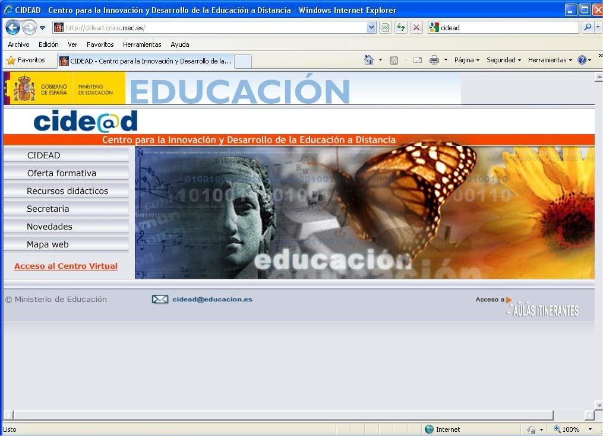

|

Página web del CIDEAD
|
Gracias al
ordenador personal e Internet puedes disfrutar en tu casa de
este trabajo pero no siempre ha sido así.
Los orígenes de Internet se remonta a los años 60-70 del siglo
XX cuando empiezan a interconectarse ordenadores militares y
universitarios. De esta manera poco a poco se empezaron a
conectar ordenadores de todo el mundo.
El nacimiento de Internet cambia la forma de comunicarse del ser
humano, se empieza a utilizar cada vez más el correo
electrónico que el teléfono o el correo ordinario. Las empresas
utilizan Internet como herramienta de trabajo e incluso van más
allá muchas de ellas no tienen una sede física si no que operan
sólo en la red llegando de esta forma a todos los países del
mundo. |